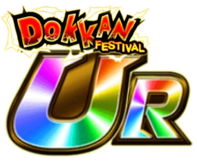
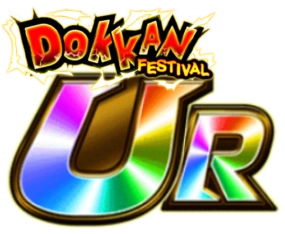

Build recomendada
DATA DE LANÇAMENTO: 30/05/2025

Build recomendada
Eu não sei quem na Akatsuki achou que o Tao Pai Pai devia ter mais de 1700% de ATK, mas parabéns pra essa pessoa.
O Tao é um personagem super simples, precisando de aliados na nova categoria Mission Execution no time pra ter 80% de redução de dano
Depois de usar a Active dele, ele tem double rainbow orb change e cada rainbow orb dá +200% de ATK temporariamente, ou seja, dano insano que fica ainda mais insano se o inimigo estiver stunado
Apesar de ele não ter muita defesa, a redução de dano é mais que suficiente pra ele conseguir tankar, oq torna ele um Dokkan Fest muito poderoso e melhor que o Goku Blue Kaioken
Nota dos Links:
03/10
Nota das Categorias:
05/10
Você chegou ao fim dessa página!
Obrigado por ler tudo, e fica a vontade pra ver outras